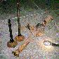

Project Pieces and Parts - Rear Axle
|
| [an error occurred while processing this directive] |
Short Cuts |
|
|
|
by: Terry L. Howe
 |
|
'50 CJ-3A Dana 41
|
The Dana 41 axle that came with my CJ-2A was from a '50 CJ-3A. It
is a fairly strong axle, but the shaft spline count is low, 10 spline
I believe. It also uses a two piece shaft which is weaker than
a one piece shaft of the same size. You often hear about 70s and
80s CJs with the AMC 20 "spinning a hub". This happens when the
outer hub of the shaft spins on the splines. I didn't want this
to happen to me.
 |
|
'71 CJ-5 Dana 44
|
The ultimate low buck axle upgrade for the flat fender is the mid
1970 to 1971 CJ-5 Dana 44. Around mid 1970 they started using a
Dana 44 with 30 spline, one piece shafts. It is offset for the
Dana 18 transfer case rear output and the spring perches bolt right on
to any flat fender military or civilian as well as early CJ-5s with
the Dana 44 with two piece shafts.
I was keeping an eye out for one of these fairly rare Dana 44s and
patience paid off. Darron Bergenhaur happen to locate one and
I managed to buy it from him. It was in rough shape, a few lugs
were broken and the brakes were non-existent. The good news was
it happened to have 4.27:1 R&P; that matched my Dana 30 and the shafts,
bearings, and gears appeared to be in good shape.
|  |
|
'71 CJ-5 Dana 44 with shafts removed
|
The only work I needed to do on the axle was repack the bearings
and fix the brakes. The backing plates that were on the axle were
badly corroded and they were not outfitted with a parking brake.
I was planning on getting rid of the drum parking brake on
the Dana 18, so I wanted to have a rear axle with a parking brake.
Recently, I purchased a '73 Commando for $300. It had a Dana 44
that would not work in my flat fender, but it had 11" drum brakes
that were in excellent shape and they had a parking brake. Even the
springs and shoes were in good shape, so I bolted the Commando
backing plates to my CJ-5 Dana 44 and used all the parts to
reassemble brakes for it. I used the Commando parking brake
cables and will probably tie them into a hand brake.
Trending on 4x4Wire TrailTalk Forums
OutdoorWire, 4x4Wire, JeepWire, TrailTalk, MUIRNet-News, and 4x4Voice are all trademarks and publications of OutdoorWire, Inc. and MUIRNet Consulting.
Copyright (c) 1999-2019 OutdoorWire, Inc and MUIRNet Consulting - All Rights Reserved, no part of this publication may be reproduced in any form without express written permission
You may link freely to this site, but no further use is allowed without the express written permission of the owner of this material.
All corporate trademarks are the property of their respective owners.

{kind=link}